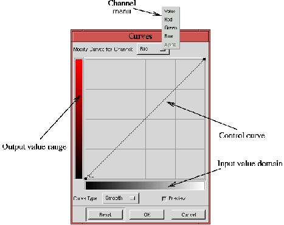
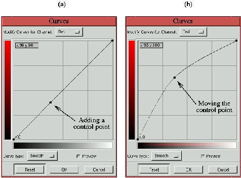
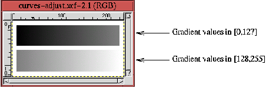
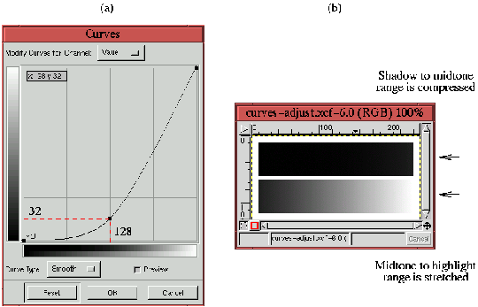
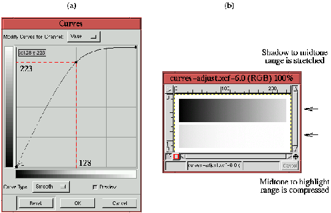

Next: 11.2.2
Коррекция цвета при Up: 11.2
Коррекция цветового сдвига Previous: 11.2
Коррекция цветового сдвига
Next: 11.2.2
Коррекция цвета при Up: 11.2
Коррекция цветового сдвига Previous: 11.2
Коррекция цветового сдвига
11.2.1 Инструмент ``Кривые''
Инструмент ``Кривые'' находится в меню окна изображения
Изображение->Цвета->Кривые.
Figure: Инструмент ``Кривые''
 |
На рисунке 11.8
показаны основные компоненты инструмента ``Кривые''. Как и инструмент
``Уровни'', инструмент ``Кривые'' может быт применен к пяти различным каналам,
однако для коррекции оттенков нас в основном будут интересовать Красный, Зеленый
и Синий каналы.
Основные элементы этого инструмента это область входных значений,
диапазон выходных значений и, изображенная на графике, управляющая
кривая. Оси разбиты направляющими линиями на четверти и имеют диапазон
значений от 0 до 255. Таким образом в точках пересечения горизонтальной оси с
направляющими линиями значения составляют 0, 64, 128, 192, 255 слева на право,
то же по вертикальной оси, с низу в верх.
Управляющая кривая представляет отображение области входных значений на
диапазон выходных значений. Звучит довольно абстрактно! Что хорошего в
отображении входных значений в выходные? Общий ответ в том, что кривая
отображающая входные значения в выходные это наиболее мощный инструмент
цветокоррекции в GIMP, и на его изучение определенно стоит потратить время.
Более подробно об отображении входных значений в выходные и о том, что в этом
хорошего - буквально через секунду...
Figure: Добавление и перемещение
управляющей точки
 |
Рисунок 11.9
демонстрирует основную операцию, которую мы будем производить с инструментом
``Кривые'', это добавление контрольной точки к управляющей кривой
(рисунок 11.9
(a)) и перемещение этой контрольной точки в новое положение (рисунок 11.9
(b)). Контрольные точки добавляются простым нафатием кнопки мыши на кривой в
желаемом месте. Кликнув на точке и удерживая клавишу, можно перемещать точку
движением мыши. Если в момент клика курсор мыши не находится на кривой, то
контрольная точка будет добавлена на кривую непосредственно над (или под)
курсором. При этом добавленная точка автоматически перемещается к месту
расположения курсора.
Каждая управляющая кривая по умолчанию имеет две контрольные точки,
расположенные на левом нижнем и правом верхнем концах кривой. Эти точки могут
перемещаться, также как и точки созданные пользователем. Все контрольные точки,
кроме точек по умолчанию, могут быть удалены при нажатии на кнопку ``Reset'' в
диалоговом окне инструмента ``Кривые''. Если было добавлено слишком много
контрольных точек и вы хотите удалить одну из них, сделать это можно переместив
точку за левый или правый край диалогового окна.
Инструмент ``Кривые'' также имеет информационное поле, которое показывает
текущие значения координат X и Y курсора мыши на области графика диалогового
окна. Это поле расположено в левом верхнем углу области графика, и, как вы
увидите, отображаемая там информация необходима для точной цветокоррекции. Но
сначала важно получить интуитивное представление о том, как работает инструмент
``Кривые''.
Figure: Изображение с градиентами от
тени до полутона и от полутона до света
 |
На рисунке 11.10
представлен специальный тест, который поможет вам понять как инструмент
``Кривые'' воздействует на изображение. Здесь показаны два градиента, каждый из
которых использует половину динамического диапазона градаций серого. Верхний
градиент имеет значения от 0 до 127, а нижний - от 128 до 255.
Далее показано, как используется инструмент ``Кривые'' для изменения
динамического диапазона этих двух градиентов.
Figure: Улучшение контраста градиента
``полутон-блик''
 |
Рисунок 11.11
показывает канал ``Яркость'' инструмента ``Кривые''. Контрольная точка размещена
в середине кривой и передвинута вниз до положения в четверть ее первоначальной
высоты. В начале, пока это была прямая линия, каждое входное значение
отображалось в эквивалентное выходное. Однако, кривая изображенная на
рисунке 11.11
изменяет это отображение. Теперь входные величины от 0 до 128 отображаются в
одну четвертую диапазона, который они занимали до этого. То есть сейчас эти
величины сжаты в диапазон от 0 до 32. В то же время входные величины,
расположенные в области 128-250 растянуты до диапазона от 32 до 255. Это
обозначено на рисунке красными пунктирными линиями, наложенным на диалоговое
окно инструмента ``Кривые''.
Это означает, что все точки, которые имели значения от 0 до 128 на
рисунке 11.11
теперь занимают диапазон от 0 до 32. Таким образом большинство деталей и
контраст между точками, имевшими соседние значения, потеряны. Этот эффект ясно
виден на верхнем градиенте рисунка 11.11
(b), который представляет собой результат применения кривой (рисунок 11.11
(a)) к изображению на рисунке 11.10.
В то же время точки в области 128-255 теперь занимают расширенный диапазон - от
32 до 255, следовательно контраст этих точек усилен, как вы можете видеть на
нижнем градиенте рисунка 11.11
(b).
Figure: Улучшение контраста градиента
``тень-полутон''
 |
Рисунок 11.12
демонстрирует противоположный эффект. Входные значения из области 0-128
растянуты, а из области 128-255 - сжаты. Эффект показан на рисунке 11.12
(b). Хотя эти два примера иллюстрируют использование канала ``Яркость'',
сделанные выводы справедливы для Красного, Зеленого и Синего каналов.
Вывод, который можно сделать из двух приведенных примеров состоит в том, что
инструмент ``Кривые'' используется для двух вещей. Во-первых, диапазоны значений
точек могут быт перераспределены. Это имеет практическую ценность, когда
цветовой канал не сбалансирован с другими. Если имеется цветовой дисбаланс, мы
попытаемся определить, какой диапазон не сбалансирован, определить каким он
должен быть, и, используя инструмент ``Кривые'' попытаемся отобразить один
диапазон в другой. Этот подход будет детально развит в разделе 11.2.2.
Во-вторых, инструмент ``Кривые'' может быть использован для улучшения
контраста там, где это наиболее необходимо. Часто изображение содержит предмет,
который значительно более важен, чем все остальное изображение. В этом случае
желательно придать этому предмету максимально возможный контраст и детальность.
Из приведенных выше примеров видно, что инструмент ``Кривые'' можно использовать
для улучшения контраста, однако заметьте, что улучшение контраста для одного
диапазона значений одновременно приводит к потере контраста за пределами этого
диапазона. Это ясно продемонстрировано на рисунках 11.11
(b) и 11.12
(b). К счастью, обычно мы стремимся к улучшению контраста предмета при
одновременном обеднении контраста фона. Это заставляет взгляд зрителя
перемещаться на ту часть изображения, которую мы хотим подчеркнуть. Идея
увеличения контраста предмета будет развита в разделе 11.2.6.
Next: 11.2.2
Коррекция цвета при Up: 11.2
Коррекция цветового сдвига Previous: 11.2
Коррекция цветового сдвига
Grigory Bakunov 2003-05-26